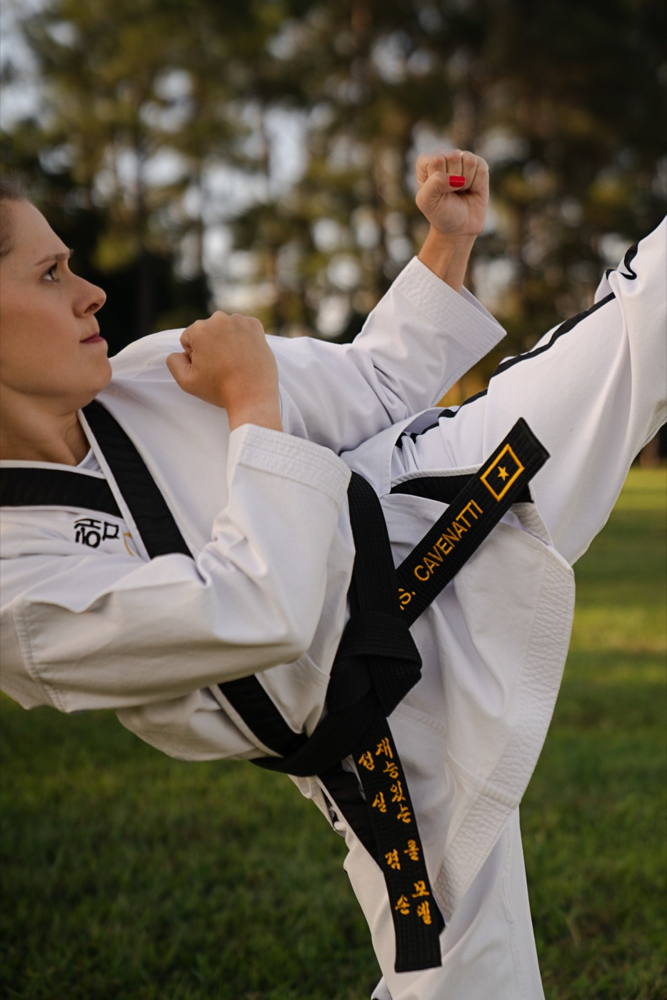
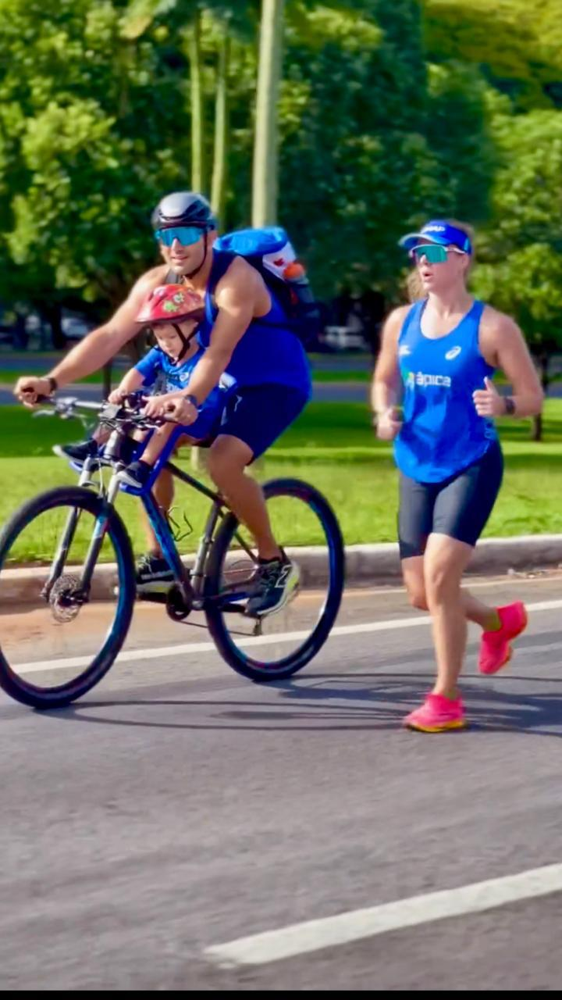

Esporte · educação · liderança
Mrs MasterCAVENATTI
Atleta, educadora e cofundadora. Uma trajetória de conquistas construída com conhecimento e autonomia.
Dez vezes campeã mundial de Taekwondo, fez mestrado na modalidade e reúne alto rendimento, estudo e empreendedorismo. Na Kihap, participa da construção de uma escola que forma pessoas.
Convide a Mrs Master
Sobre
Quem ela é, além dos títulos.
Mrs Master Cavenatti começou no Taekwondo aos 14 anos. A experiência como atleta levou-a à Educação Física, à Fisiologia do Exercício e ao mestrado na modalidade. Sempre gostou de dançar e praticou jazz por muitos anos, inclusive na vida adulta. Hoje também é atleta de corrida: começou com poucos quilômetros e foi ampliando seus limites dia após dia. Cofundou a Kihap com o Master e é mãe de Benício e Serena. Família, movimento e trabalho fazem parte da mesma vida, sem que um papel defina todos os outros.

Trajetória
Prática, estudo e decisões próprias.
O Taekwondo começou na adolescência e tornou-se uma carreira de alto rendimento. O jazz acompanhou sua vida por muitos anos. Mais tarde, a corrida trouxe outro modo de experimentar a evolução: começar com poucos quilômetros e seguir, um dia de cada vez. O estudo e o empreendedorismo levaram essa experiência à construção da Kihap.
- 14 anos
Início no Taekwondo.
- UFPR
Graduação em Educação Física e especialização em Fisiologia do Exercício.
- 10×
Campeã mundial de Taekwondo.
- Kihap
Cofundação de uma escola de artes marciais e desenvolvimento de pessoas.
- Hoje
Atleta de corrida, depois de começar com poucos quilômetros e ampliar seus limites dia após dia.
Formações
Conhecimento que acompanha a prática.
Graduação em Educação Física · Universidade Federal do Paraná.
Especialização em Fisiologia do Exercício · Universidade Federal do Paraná.
Mestrado em Taekwondo.
Curso de Neurociências · Prof. Pedro Calabrez.
Millionaire Mind Intensive · T. Harv Eker.
Mission to Million · T. Harv Eker.
Train the Trainer · T. Harv Eker.
Método CIS · Paulo Vieira.
Método Origem.
Palestras
Uma trajetória para abrir conversas.
A experiência da Mrs Master reúne esporte de alto rendimento, conhecimento do corpo, empreendedorismo e liderança feminina. Temas e formatos de participação são construídos com ela para o contexto de cada evento.
Converse sobre uma participação

Contato